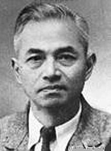

中文维基百科Facebook粉丝专页正式上线，邀请大家一同关注。 | [关闭] |
李四光[编辑]
| 李四光 | |
|---|---|
|  | |
| 出生 |
1889年10月26日 大清湖北省黄冈县回龙山香炉湾 |
| 逝世 |
1971年4月29日（81岁） |
| 国籍 |
|
| 知名于 | 地质力学 |
| 科学生涯 | |
| 研究领域 | 地质学 |
李四光（1889年10月26日－1971年4月29日），字仲揆，湖北省黄冈县人，蒙古族[1]。祖父库里是蒙古族人，通汉文，以在乡间设私塾为生，与汉族妇女结婚，后代取李姓。[2]。中国著名地质学家和古生物学家，大清工科进士[3]，中华民国的中央研究院院士，中华人民共和国的中国科学院院士。
李四光是中国古生物学、地质学、第四纪地质学研究的开拓者[4]，创立大地构造理论地质力学，对亚欧大陆东部山脉体系的形成原因提出了自己独特的观点，是现代板块构造理论出现之前的大地构造理论之一。然而其对不同学术观点的压制，特别是在1949年以后利用权力对其地质力学理论和第四纪冰川理论进行的推广和对其他观点的压制，也被认为是政治对科学发展和传播产生负面影响的典型例子[5]。
生平[编辑]
李四光原名李仲揆，十三岁（1902年冬）赴武昌求学小学报名时误将年龄十四填入姓名一栏，增添几笔遂改成李四光[6]，取“光被四表”之意，而以仲揆为字。光绪三十年五月1904年赴日本留学，同年参加同盟会，先后在东京弘文学院、大阪高等工业学校学习，选学“舶用机关”。1911年毕业回中国。1911年9月到京师参加“海归”考试，以最优等成绩获赏“工科进士”。1913年赴英国伯明翰大学先学采矿，后转学地质学，1918年5月，他以《中国之地质》的优秀论文获得了自然科学硕士学位，接着到欧洲大陆做地质考察[7]。1919年获硕士学位。同年回中国，任北京大学地质系教授兼系主任。后再赴英国深造，1927年获伯明翰大学博士学位，同年回中国。1928年7月至1938年4月任国立武汉大学建筑筹备委员长，后在南京参与创建中央研究院，并任地质研究所研究员兼所长，直至1948年。同年，获任为中华民国中央研究院第一届(数理科学组)院士[8]。1932年曾出任国立中央大学代理校长。1949年后，历任中华人民共和国的全国地质工作计划指导委员会主任、中国科学院副院长、地质部部长。1952年筹建北京地质学院。1954年当选为中国人民政治协商会议全国委员会副主席。1955年当选中国科学院院士。1958年当选为中国科学技术协会首任主席。1971年4月29日在北京逝世，享年82岁。
- 民国20年（1931年）3月30日，特派西陲学术考察团理事会理事[9]。
- 民国21年（1932年）9月1日，派管理中英庚款董事会董事[10]。
- 民国22年（1933年）4月20日，派管理中英庚款董事会董事[11]。
- 民国25年（1936年）3月28日，派管理中英庚款董事会董事[12]。
- 民国28年（1939年）5月30日，派管理中英庚款董事会董事[13]。
- 民国31年（1942年）5月19日，连任管理中英庚款董事会董事[14]。
学术贡献[编辑]

{kind=link}
{kind=link}
- 对中国北部䗴类化石及其地层意义的研究是中国最早进行的䗴类及石炭二叠系研究。其创立的“䗴”字，用来翻译Fusulinid（一种早已灭绝的有孔虫，属于原生动物），为现在的中国古生物学界所沿用[15]。
- 提出了华东第四纪冰川存在的理论。
- 运用地质力学对地壳运动及其与矿产分布的规律的研究，创建“地质力学”和“构造体系”的概念。
- 预测新华夏构造体系三个沉降带存有石油，后大庆、胜利等油田的发现证实其预测。但是对于这一点，在学术界一直有争论，如黄汲清认为是他的大地构造理论指导了大庆油田的发现。[16]
家庭[编辑]
{kind=link}
参考文献[编辑]
- ^ http://www.cnki.com.cn/Article/CJFDTotal-MZTJ201107028.htm 李四光(蒙古族)
- ^ 樊洪业：《李四光与丁文江的恩恩怨怨》，南方周末，2012年1月30日，B5副刊，http://www.infzm.com/content/97874
- ^ 《宣统政纪》卷62，宣统三年九月初六日庚午，李四光等赏给工科进士
- ^ C. Croneis, The Journal of Geology 37 (2), 187 (1929).
- ^ 张林源，中国东部第四季冰川争论问题及其哲学意义，见：王子贤主编，《地学与哲学》
- ^ 李四光
- ^ 樊洪业：《李四光与丁文江的恩恩怨怨》，南方周末，2012年1月30日，B5副刊，http://www.infzm.com/content/97874
- ^ 李四光 逝世院士一览表中央研究院
- ^ 《国民政府公报》，第734号
- ^ 《国民政府公报》，第19号
- ^ 《国民政府公报》，第1111号
- ^ 《国民政府公报》，第2008号
- ^ 《国民政府公报》，第157号
- ^ 《国民政府公报》，第467号
- ^ C. Croneis, The Journal of Geology 37 (2), 187 (1929).
- ^ 大庆油田发现真相 互联网档案馆的存档，存档日期2014-05-02.，南京日报2010年5月20日。
- ^ 《林彪的这一生》少华、游胡，湖北人民出版社，2003年4月，ISBN 7-216-01446-4。第2节“林彪长到十三岁”。
外部链接[编辑]
| 维基语录上的相关摘录： 李四光 |
| 维基共享资源中相关的多媒体资源：李四光 |
| 政府职务 | ||
|---|---|---|
| 新头衔 | 中国地质工作计划指导委员会主任委员 1950年—1952年 |
机构撤销 |
| 新头衔 | 中央人民政府地质部部长 1952年8月—1954年 |
继任： 中华人民共和国地质部 |
| 前任： 中央人民政府地质部 |
中华人民共和国地质部部长 1954年—1970年6月 |
机构撤销，改设国家计划委 员会革命委员会地质局 |
| 新头衔 | 中华人民共和国国务院科教组组长 1970年6月—1971年4月 |
继任： 刘西尧 |
| 学术机关职务 | ||
| 新头衔 | 中国科学技术协会主席 1958年—1971年4月 |
继任： 周培源 |
| 教育职务 | ||
| 前任： 邹鲁 |
国立中山大学校长 1925年11月（未到职） |
继任： 顾孟余 陈公博代理 |
| 前任： 徐谦 国立武昌中山大学校务委员会主任 |
国立武汉大学建筑筹备委员长 1928年7月—1938年4月 1928年7月—1929年春刘树杞代理校长 |
继任： 王世杰 国立武汉大学校长 |
| 前任： 段锡朋 （代理） |
国立中央大学校长 （代理） 1932年7月—8月 |
继任： 罗家伦 |
| 新头衔 | 东北地质专科学校校长 1951年8月—1952年10月 |
继任： 文士祯 东北地质学院院长 |
| ||
| ||
| ||
| ||
| ||
| ||
| |||
{kind=link}
| ||
|
- 1889年出生
- 1971年逝世
- 第3届国务院组成部门负责人
- 第2届国务院组成部门负责人
- 第1届国务院组成部门负责人
- 中央人民政府政务院组成部门负责人
- 中央研究院第一届院士
- 宣统三年游学毕业进士
- 中央研究院数理科学组院士
- 中华人民共和国地质学家
- 中华人民共和国古生物学家
- 中华民国大陆时期古生物学家
- 中国科学院生物学地学部学部委员
- 中华人民共和国党和国家领导人 (中国科学院院士)
- 中华人民共和国蒙古族党和国家领导人
- 中华人民共和国地质部部长
- 中国共产党第九届中央委员会委员
- 第四届国民参政会参政员
- 中华民国大陆时期部聘教授
- 国立武汉大学校长
- 中央大学校长
- 南京大学校长
- 中国地质大学校长
- 武汉大学校友
- 大阪大学校友
- 伯明翰大学校友
- 中国蒙古族科学家
- 团风人
- 李姓
- 中国科学技术协会主席
- 苏联科学院外籍院士